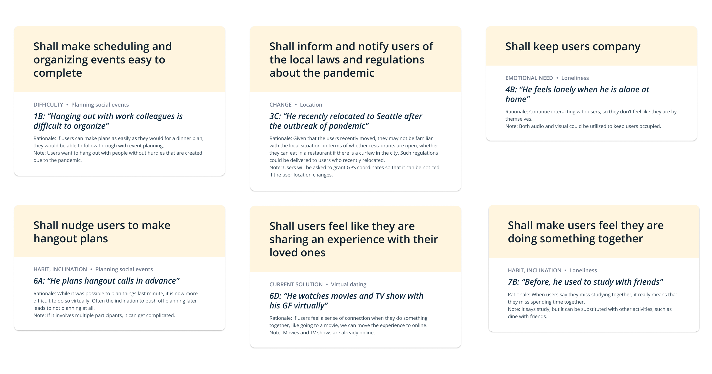

Supporting Meaningful Connections
Overview
Connecting with Others is a semester-long class project for the course User Experience and User
Research Methods at Cornell Tech.
This semester's theme is "Staying Connected at a Time of Social Isolation".
I was responsible of the full UX lifecycle, covering contextual inquiry and analysis, requirements
extraction, design-informing models, design thinking, ideation, sketching, conceptual design, and
formative UX evaluation.
Categories
UX Strategy, UX Research
Date
Jan 2021 - May 2021
Tool
Interviews & surveys, Card sorting, Affinity Diagram, Storyboarding, Prototyping, Heuristic Evaluation, Rigorous Evaluation
Problem Space
Identified Problems
I first identified and described five problems faced by people with the need to connect with others at
a time of social distancing.
I explored the theme of "Connecting with others during a time of social distancing",
thinking beyond technology-centric proposal of a webpage, phone application, or interaction.
I tried to focus on the problems people face in their lives with regards to their friends,
colleagues/peers, families, and communities and approached it considering the role of interactive
computing.
In identifying the problems, I stayed away from concrete one-time tasks and instead looked for
long-lived activities that span many different social or technological contexts.
- The need to eat dinner with friends, family, and loved ones at least once a week
- The need to visit family on holidays (e.g., Thanksgiving, Hanukkah, Christmas, etc)
- The need to spend one’s own birthday with friends, family, and loved ones
- The need to play team sports (e.g., soccer, basketball, baseball, football, etc) with local or school teams regularly
- The need to go to karaoke for hang-out
People affected by these Problems
- People with this need are not limited to a particular age group. Anyone who has started to form bonds with someone other than their immediate family member would want to have dinner with them. It is difficult to specify characteristics for this group of people, which, in other words, means targeting is too broad. bottom line" - profit, people and planet.
- People with this need are most likely to be in the age group past their teenage and young adult years. However, the older the person is, the more likely that the person would want to visit family on holidays. While this need is not limited to a particular socioeconomic status, it is more likely people of low- and middle-class suffer from this need, as without enough money and vacation days, the wealthy can still visit their families during the time of such pandemic.
- People with this need are children, teenagers, and young adults. A vast majority of people who belong in this category enjoy spending, especially on special occasions like birthdays. While as people grow old and make families, they tend to spend their birthdays with immediate family members, young adults have a strong need to be with friends.
- People with this need can range from elementary school kids to adults aged 50-60. Especially because of social distancing and a limited number of people to enter public buildings, people crave more for outdoor activities. As many Americans are engaged in and part of many sports teams, they long to go back to the field. Playing sports has become more available as covid is on the decline, but all players must wear masks while in the playing field.
- People with this need are usually teenagers and young adults. While they used to go to public parks, theaters, and karaoke for a hangout, now these places are off-limit. Many people use karaoke to relieve stress and make good memories with friends. Karaoke is especially dangerous as it is a small confined space without much air ventilation.
Brainstorming Ideas
- The need to eat dinner with friends can be addressed by VRChat. This application can be downloaded on Steam, Quest, Rift and Viveport. Also, it does not explicitly require a VR device to join. Thus, people can join to interact with people all over the world and express themselves in the virtual world as they would in real life - they can change appearance, eye colors, hair colors, glasses, and much more.
- The real reason behind why people want to visit their families on holidays is because people want and need physical touch. A hug is what has been used to connect people with bluetooth sensors. Created by Cutecircuit, HugShirt works the same way as online chatting; it connects bluetooth to the phone and records hugs, which is delivered to the recipient in real-time all over the world.
- Children especially perceive their birthdays as special and once-in-a-year opportunities to celebrate. However, because of the pandemic, many were stuck inside without a hearty, cheerful atmosphere. Camp is a toy retailer and hosts free birthday parties virtually. Its camp counselors lead “sing-alongs, story time and magician shows” in the virtual world, connecting people in times of the pandemic.
- The need to get engaged in team sports can be addressed with sports games on Augmented Reality (AR) and Virtual Reality (VR) technologies, such as 2MD: VR Football Evolution and VR Sports Challenge. The combined usage of AR and VR can make people feel as if they are really running on the field side-by-side with their team.
- A couple of bluetooth microphones and a computer are all people need to plan a karaoke at home. While karaoke place itself may be dangerous, the risk can be mitigated if people set the system in their individual households. Most likely, those young adults who want karaoke would already have computers and microphones can be purchased with around $30 budget on Amazon. Given that it is a one-time investment and people can re-use it whenever they want to connect with and sing with others. After setting it up, people can go on YouTube to find karaoke versions of many popular songs.
Product Concept Statement
Based on the brainstormed ideas, the product concept statement was drafted to help set focus and scope
for system development.
"SendLove connects people across the globe during a time of social distancing. It is designed for people who want to visit their families on weekends and holidays but are unable to do so. The real reason behind why people want to visit their families is because people want and need physical touch and warmth. While the HugShirt that is currently on the market delivers hugs using bluetooth technology in real-time, it does not deliver emotionally comforting breathing sound and body temperature. SendLove strives to make users feel as close to a real hug as possible. Instead of a shirt, SendLove is a stuffed animal that can be personalized by the user as their favorite animal or character. When delivering a hug, it also raises the temperature of attached sensors so that users feel the warmth as well. The experience is comforting and calming."
User Research
Understanding User Needs
Interviews
I conducted a semi-structured interview with my target users to learn more about them and their
current behaviors, attitudes, and experiences.
I recruited three participants for the interview. I began by asking demographic questionsabout
participant characteristics (age, gender, other relevant characteristics).
I took thorough hand-written notes during and after each interview.
The notes were analyzed considering questions such as:
- What were some common themes?
- Was there anything surprising or particularly interesting?
- Was there any challenges in conducting the study?
Interview notes taken during and after the interviews
Key Findings
People of all ages seem to miss social interactions in the physical world. While young adults were
more likely to long for meeting their friends, the middle-aged person’s focus was on their family.
All interviewees preferred real-world interactions over virtual world meetings. It was surprising to
find that even the most tech-savvy generation - people who are working in the tech industry - valued
social interaction in the real world over the virtual world. Also, all three interviewees had
intimate someone with whom they are physically apart. I found it interesting that people are all
around the world, so that everyone has at least one person they are separated by a long distance.
Social distancing has become a part of our lives that a Zoom call is more casual than a coffee chat.
Because of covid’s contagious nature, many people have adapted to the circumstance and stepped into
the virtual world since its outbreak. It forced an even more resistant age group of middle-aged and
the elderly to learn how to navigate the virtual world through an electronic device. I did not
foresee the pandemic and its effect on the transition to the virtual world; as the more vulnerable
population were those who needed to be protected with social distancing, it was critical that these
people learn how to use some apps and functions so that they can be safely kept inside their
residence without having to travel the outside world. I want to create a tool that makes people feel
they are physically close and connected.
Affinity Diagram
Based on the notes taken during the user interviews, I codified and analyzed the findings on Miro board, as can be seen above. Regardless of the change or continuity in location and employment status, all users were facing difficulties in connecting with loved ones. It is interesting to note that while users described their physical needs with a lot more detail than emotional needs, all needs seem to have stemmed based on their own social life before COVID. Users have come up with various solutions of their own to fill their needs, but none of them was satisfied with their current method. I wanted to not only come up with good categories to encompass the whole story, but also to delineate the relationships between those categories. I regret that some of the connections between clusters are not as clearly defined as I would have liked.
Design Requirements
I examined the user research findings and deduced design requirements. Interesting and representative cards from the qualitative analysis were selected.
Design Process
User Groups & Personas
Based on the user research, product concept statement, and a sprinkle of imagination, I came up with two distinct user groups. Then, I created a persona for each user group.
User Groups
-
User group #1
- The user group of persona #1 represents younger users who are in their late twenties and thirties. They are versatile and comfortable with technology and spend most of their time on digital devices, especially after work-from-home started. They are relatively more willing to give new tech stuff a try, but are skeptical to make a huge change to their already-established routines. They have an ideal self that they want to maintain in the professional and social spaces.
- The user group #1 is created to capture the interviews with two interviewees who are engaged in long-distance relationships with their significant others. They both work in the tech field and share similar concerns about maintaining relationships and friendship. From creating this user group, I wanted to highlight the need to keep the users very engaged with the other party.
- User group #2
- The user group of persona #2 represents older users who are in their forties and fifties. They are not familiar with technology so they use it for a minimal amount for the essential stuff, such as banking and calculators. People in this user group are resistant to learning new technology but once they adopt something, they aren’t likely to change their choice of technology.
- The user group #2 is created to capture the interview with one interviewee who has some of her immediate family on the other side of the world. She really misses her family and wants to call them more often. From creating this user group, I wanted to emphasize the need to keep things simple so users who are technologically challenged can engage comfortably.
Personas
Persona #1
Persona #2
Storyboards


Prototypes
Low-fidelity
Screen 1 is the home screen of the app. It greets the user and gives four
suggestions on what to do and with whom to do it. If the user does not like the given suggestions,
the user can press “I want to choose.”
Screen 2 appears when the user presses “I want to choose” at the bottom of
Screen 1. The app asks the user with whom the user wants to hang. The most
recently contacted
people are in the center of the sphere, and as one goes further out, people the user has not
talked to recently are displayed accordingly. When the user presses the person they want to hang,
they can go to the next screen using the “Next” button. “<” at the top-left corner goes back to
Screen 1.
Screen 3 appears when the user decides on with whom to hang and moves onto the
next step by pressing the “Next” button. The user is asked to choose what activity they would
like to do with the person. When the user presses the activity that they like, they can press
“Next” to move onto the next screen. “<” at the top-left corner brings the user back to
Screen 2.
Screen 4 appears when the user decides on the activity and presses “Next” in
Screen 3. The app offers free and premium movies that the user can choose to watch
with their friends. It asks the user to pick four movies that they want to suggest to their friend.
When the user chooses what movie to suggest, they can go to the next screen using the “Next” button.
Screen 5 confirms the friend and hangout activity with the user. When the user checks
the information and wants to make a change, they can press “Back” on the left-bottom corner, which
brings the user back to Screen 4. Otherwise, the user can press “Send,” which leads
to Screen 6.
Screen 6 confirms that the user’s invitation has been sent to their friend.

Screen 7 is when the user receives the invitation from another user. The user can
either accept or reject the invitation by choosing one of two options, “Yes, I want to watch” or “No,
maybe later.” If the user chooses not to hangout, then the notification disappears and the user who
sent the invitation will receive a message that they are currently busy. If the user decides to go
with “Yes, I want to watch,” then Screen 8 appears.
Screen 8 asks the user to choose one of the four movies that are suggested by the
friend. If the user does not want to watch any of the suggested movies, the user can suggest their own
by pressing “suggest my own” at the bottom of the screen. By pressing “Confirm” in the bottom-right
corner, the user can move onto the next step – Screen 9.
Screen 9 instructs the user to rotate their phone so they can have the movie on full
screen view. Screen 9 stays until the user rotates their phone. When rotated, it moves onto
Screen 10.
Screen 10 is the screen where the users watch a movie together. The user’s friend’s
video is in the top-right corner. The three dots in the bottom-right corner represent the menu. ‘CC’
allows the user to turn on and off the caption. The user can decide to stream it on their computer,
tv, or tablet by pressing the button right above ‘CC.’ The user can enter full screen by pressing the
rectangular shape on the bottom-left corner.
Screen 11 appears when the user decides to play a mini-game with their friend. The
top rectangle contains the user’s friend’s video. The bott om rectangle is where they can play a game.
The user can change the game by pressing “choose a new game” or end the hangout by pressing “stop.”
When the user hangs up the call, Screen 12 asks users for feedback on how they
enjoyed the hangout.
Medium-fidelity
Screen 1 is the home screen. The app makes four suggestions based on the user’s past activity. If the user chooses any of the suggestions, the user is redirected to Screen 4. The user can choose on their own by pressing “I want to choose,” which leads to Screen 2. Screen 2 asks the user to choose a person to hang. The user can tap any of the circles with names and press “Next” to go to Screen 3. By pressing “<” the user can go back to Screen 1. Screen 3 asks the user to choose an activity to do while hanging out. The user can tap any of the choices in the center and press “Next” to go to Screen 4. By pressing “ <” the user can go back to Screen 2. Screen 4 displays movie choices to the user. The user can tap a movie and press” Next” to go to Screen 5. By pressing “<” the user can go back to Screen 3. Screen 5 displays the information the user chose and allows the user to check before sending out the invitation. When the user presses “Send,” it changes to Screen 6. Screen 6 notifies the user that the invitation has been sent.
On the receiving end, the user is notified of the invitation as Screen 7. The user can decide either to agree or reject to hangout. If the user decides to hangout, they can press the button on the left, which redirects the user to Screen 8. Screen 8> explains what the invitation is about and asks the user to choose a movie out of the given options. If the user does not want to watch any of the suggested movies, they can suggest a new one by pressing “Suggest my own.” Pressing “Confirm” leads to Screen 9. Screen 9 asks the user to rotate their phone for full screen. In Screen 10, on the top-left corner is the user’s friend’s video. The user can add or remove the caption, decide to stream it on a larger screen or choose the three-dot menu for more options. If the user chooses “Play mini-game with Mike” on Screen 1, the user is directed to Screen 11. The user’s friend’s video is featured on the top rectangle and the game interface on the bottom. The user can change the game or end the hangout. After the user concludes their hangout, such in Screen 10 and Screen 11, Screen 12 shows up. It asks for user feedback.
Evaluation
Heuristic Evaluation
Evaluation Protocol
Product Description
Chilling is a fabulous new product that will connect people across the globe during a time of social distancing. It is designed for people who want to visit their families on weekends and holidays but are unable to do so. The real reason behind why people want to visit their families is because people want and need to spend time with another human being. While there are Zoom and FaceTime calls that are currently on the market that allow people to video call each other in real-time, it does not emotionally make people feel they are doing something together and spending time meaningfully. Chilling gives suggestions of which friends to hang and which activity to do during hangout. This is to remind the user of the people they have not spent time together in awhile.
Target User Group
The user group can be largely classified into two. One represents younger users who are in their late twenties and thirties. They are versatile and comfortable with technology and spend most of their time on digital devices, especially after work-from-home started. They are relatively more willing to give new tech stuff a try, but are skeptical to make a huge change to their already-established routines. They have an ideal self that they want to maintain in the professional and social spaces. The second user group represents older users who are in their forties and fifties. They are not familiar with technology so they use it for a minimal amount for the essential stuff, such as banking and calculators. People in this user group are resistant to learning new technology but once they adopt something, they aren’t likely to change their choice of technology.
Key Tasks
- 1. The user wants to spend time with their friend Julie. The user wants to suggest to Julie to watch a movie with them. After sending an invitation, the user waits till Julie picks a movie.
- 2. The user gets invited to watch a movie with their friend. The user does not like the four movies suggested by their friend, so they want to make different suggestions. One of the suggestions is accepted by the user’s friend, and they start watching the movie.
Mid-fidelity Prototype
Link to Prototype
Nielson's 10 Heuristics was used to look for instances wehre a heuristic is violated. My friend Vince
was kind enough to help with the evaluation.
I asked for 1-2 sentence description of the feature where he finds the violation along with an
annotated screenshot, the heuristic that was violated with a rationale and severity score using the
scale of 0-4, where 0 is "not an issue" and 4 "critical issue".
Based on the feedback, I determined the priority and severity of the problems and came up with the
steps to fix the problems.
This documentation can be found here: Heuristic
Evaluation
Rigorous Evaluation
Evaluation Protocol
Chilling is a fabulous new product that will connect people across the globe during a time of social distancing. It is designed for people who want to visit their families on weekends and holidays but are unable to do so. People like to hang around other people, regardless of what they do – people want and need to spend time with another human being. While there are Zoom and FaceTime calls that are currently on the market that allow people to video call each other, these tools do not move people to feel they are doing something together and sharing an experience. Chilling provides the platform for people to hang on, such as a rollerboard park or knitting club. It gives suggestions of which friends to hang, reminding the user of the people with whom they like to spend time together, and which activity to do during hangout, making the hangout process effortless and the hangout activity more focused.
Evaluation Goal
I would like to evaluate how intuitive it is to navigate through the app. I want to see if my app is
self-explanatory for a first-time user to start using to spend time with their friends and families.
I believe this is the most important to test because the target demographic includes older people
who are not so familiar with technology. Without making it intuitive to follow through for the
people with less familiarity who would be invited by their children to use for the first time,
Chilling would fail to work as a social connection app as it was intended, as it is expected to be
used by people of different levels of tech expertise.
While the rigorous evaluation has not been carried out, the full protocol can be found here: Rigorous
Evaluation
Reflection
I learned about UX engineering as an ongoing process throughout the full product cycle, that developing
the human-computer interface is not something to be done at the last minute, after the "rest of the
system" is finished.
I also took a deep dive into different user research methods that I can use in the UX lifecycle, such as
interviews, focus groups, surveys, participatory design, ethnography, and diary studies.
With this project, I was able to think thoroghly and carefully about the subject, genuinely like and
empathize with the subject, and practice a fully UX lifecycle.
This experience has helped me to take liberty and instantiate in many different ways to match the
constraints of a particular development project.